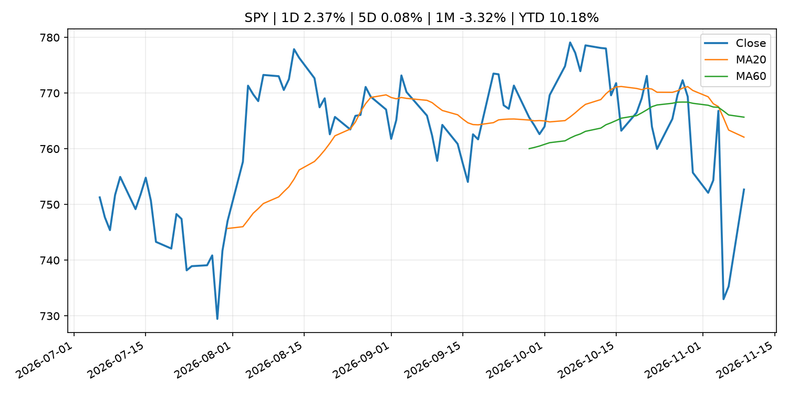
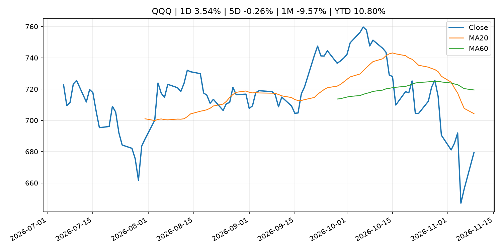
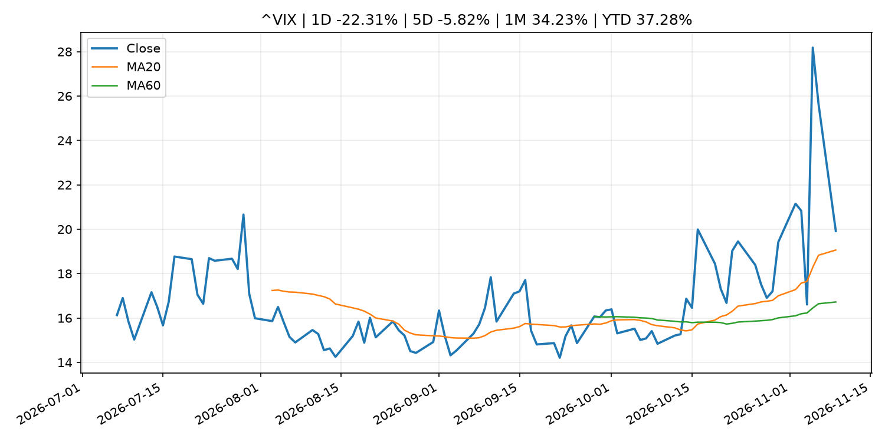
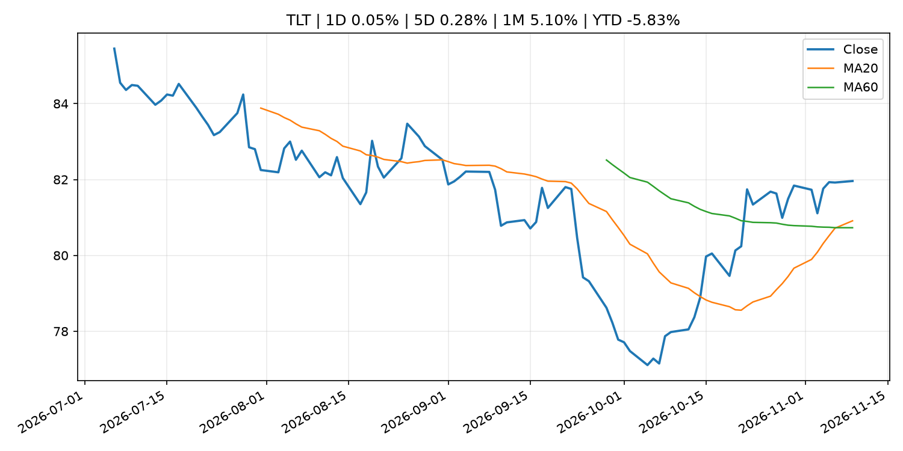
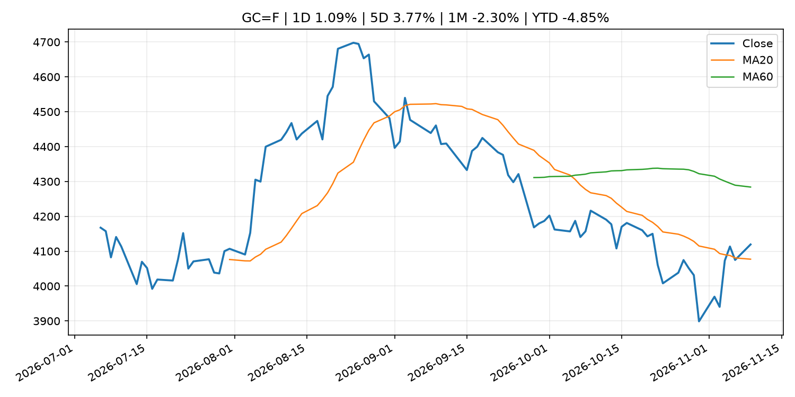
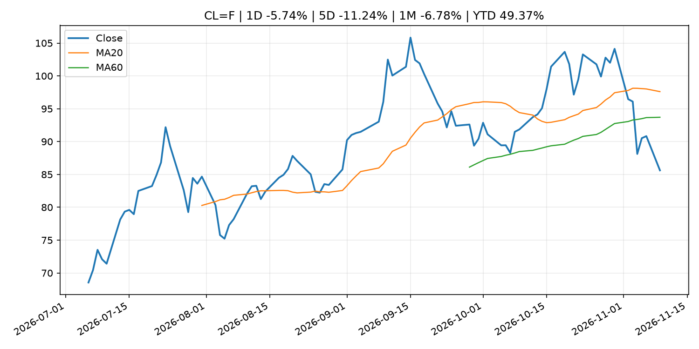
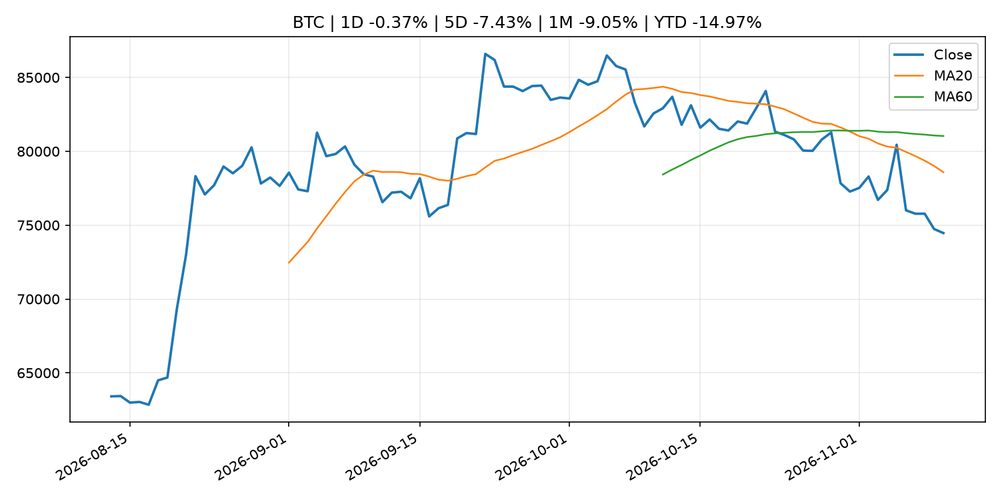
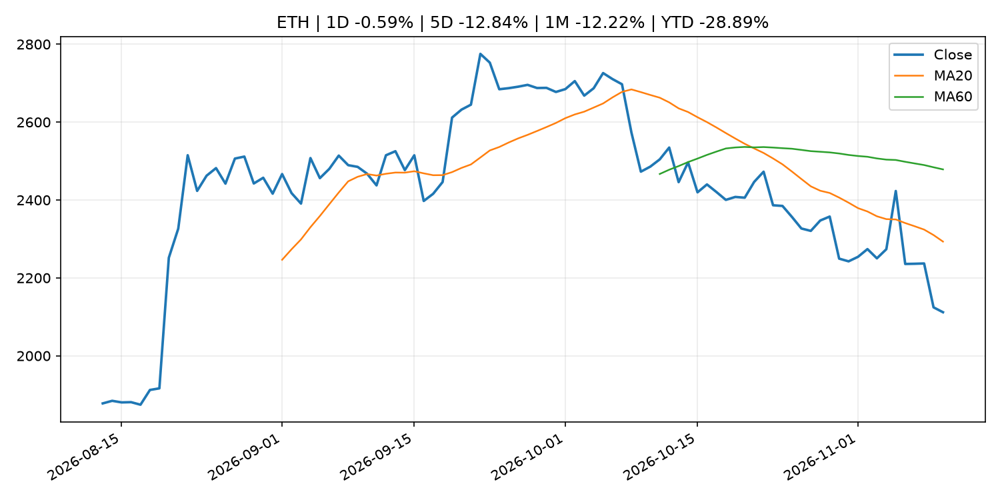
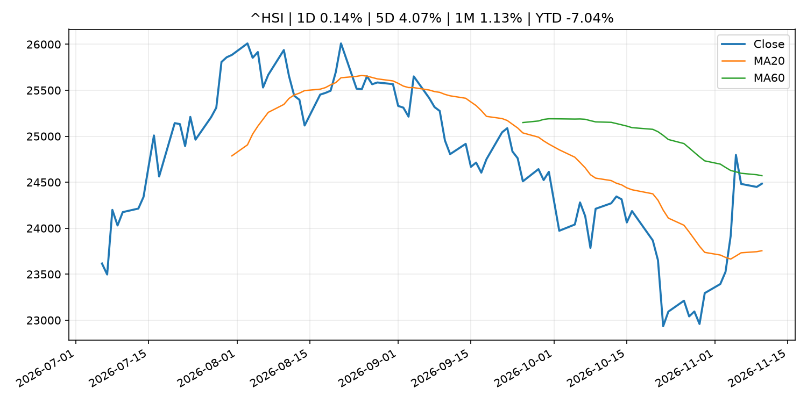

Global Macro Morning Briefing - 2026-11-10
Not financial advice / 非投资建议。
0. 今日总览
- 市场状态：risk_on。股指上涨、波动率或美元回落，市场更接近风险偏好改善。
- 今日三大主线：
- macro_data: Bitcoin faces U.S. CPI test as analysts warn inflation relief may not be enough
- macro_data: The stock-market rally keeps spreading beyond Big Tech. October inflation data could put it to the test.
- earnings: U.S. inflation, corporate earnings: Crypto Week Ahead
- 一句话结论：今日晨报重点关注：这类宏观数据会直接改变市场对通胀、增长和政策路径的预期。；这类宏观数据会直接改变市场对通胀、增长和政策路径的预期。。跨资产方面，SPY 1D 2.37%；QQQ 1D 3.54%；^VIX 1D -22.31%；TLT 1D 0.05%；GC=F 1D 1.09%；CL=F 1D -5.74%；BTC 1D -0.37%；ETH 1D -0.59%；股指上涨、波动率或美元回落，市场更接近风险偏好改善。政策、通胀、利率、美元、美债、能源和加密监管仍是主要观察线索。所有结论仅基于公开数据与短摘要整理，不构成投资建议。
1. 隔夜跨资产市场
- 美股：SPY 1D 2.37%，QQQ 1D 3.54%，整体趋势需结合 VIX 和利率确认。
- 美债/美元：TLT 1D 0.05%，美元指数 1D -0.62%，是判断折现率压力的核心线索。
- 黄金/原油：黄金 1D 1.09%，原油 1D -5.74%，用于观察避险、通胀和地缘风险。
- 加密：BTC 1D -0.37%，ETH 1D -0.59%，关注是否独立于纳指走出加密自身行情。
- 港股/A股：恒生 1D 0.14%，沪深300/上证 1D n/a，重点看中国政策预期与人民币线索。
- 风险观察：确认风险偏好是否扩散到小盘股、信用利差和周期品。
US_EQUITY
| symbol | latest close | 1D | 5D | 1M | YTD | trend |
|---|---|---|---|---|---|---|
| SPY | 752.69 | 2.37% | 0.08% | -3.32% | 10.18% | strong_downtrend |
| QQQ | 679.35 | 3.54% | -0.26% | -9.57% | 10.80% | strong_downtrend |
| DIA | 523.33 | 2.17% | 0.77% | 1.40% | 8.21% | range_bound |
| IWM | 282.51 | 3.23% | 1.21% | 1.28% | 13.56% | range_bound |
| VTI | 370.90 | 2.48% | 0.24% | -2.89% | 10.29% | downtrend |
US_MACRO_MARKET
| symbol | latest close | 1D | 5D | 1M | YTD | trend |
|---|---|---|---|---|---|---|
| ^VIX | 19.92 | -22.31% | -5.82% | 34.23% | 37.28% | uptrend |
| DX-Y.NYB | 101.67 | -0.62% | -0.08% | -0.53% | 3.30% | range_bound |
| TLT | 81.96 | 0.05% | 0.28% | 5.10% | -5.83% | strong_uptrend |
| IEF | 91.80 | -0.07% | 0.33% | 2.68% | -4.45% | range_bound |
COMMODITIES
| symbol | latest close | 1D | 5D | 1M | YTD | trend |
|---|---|---|---|---|---|---|
| GC=F | 4,119.40 | 1.09% | 3.77% | -2.30% | -4.85% | range_bound |
| SI=F | 52.91 | 2.14% | 4.32% | -12.79% | -25.01% | strong_downtrend |
| CL=F | 85.62 | -5.74% | -11.24% | -6.78% | 49.37% | range_bound |
| BZ=F | 91.42 | -7.02% | -12.74% | -12.70% | 50.49% | range_bound |
| NG=F | 3.20 | 6.77% | 12.08% | -0.59% | -11.53% | range_bound |
| HG=F | 6.34 | 1.91% | -3.16% | -4.61% | 12.35% | strong_downtrend |
HK_MARKET
| symbol | latest close | 1D | 5D | 1M | YTD | trend |
|---|---|---|---|---|---|---|
| ^HSI | 24,484.29 | 0.14% | 4.07% | 1.13% | -7.04% | range_bound |
| 0700.HK | 416.60 | -0.43% | 4.88% | -1.93% | -33.13% | range_bound |
| 9988.HK | 100.70 | -3.73% | 1.16% | -5.89% | -32.42% | downtrend |
| 3690.HK | 75.45 | 0.40% | 1.48% | 5.52% | -27.87% | range_bound |
| 1810.HK | 30.32 | 0.73% | 6.01% | 16.80% | -24.73% | strong_uptrend |
| 1211.HK | 72.00 | -0.62% | -0.48% | -4.76% | -27.09% | range_bound |
CRYPTO
| symbol | latest close | 1D | 5D | 1M | YTD | trend |
|---|---|---|---|---|---|---|
| BTC | 74,464.70 | -0.37% | -7.43% | -9.05% | -14.97% | strong_downtrend |
| ETH | 2,111.85 | -0.59% | -12.84% | -12.22% | -28.89% | strong_downtrend |
| SOLANA | 85.70 | -0.82% | -10.27% | -18.36% | -31.17% | strong_downtrend |
| BINANCECOIN | 688.30 | 0.64% | -4.32% | -5.90% | -20.21% | strong_downtrend |
| RIPPLE | 1.09 | -1.82% | -16.26% | -16.19% | -40.66% | strong_downtrend |
2. 今日最重要的 10 条新闻
1. Bitcoin faces U.S. CPI test as analysts warn inflation relief may not be enough
- 来源：CoinDesk
- 时间：2026-11-10T03:22:26+00:00
- 地区：global
- 事件类型：macro_data
- 重要性层级：Tier 1
- 一句话摘要：Bitcoin faces U.S. CPI test as analysts warn inflation relief may not be enough
- 为什么重要：这类宏观数据会直接改变市场对通胀、增长和政策路径的预期。
- 可能影响：主要影响 DXY，方向为 positive，强度 high；通胀压力可能推高政策利率预期并支撑美元。
- 资产：DXY 方向：positive 强度：high 原因：通胀压力可能推高政策利率预期并支撑美元。
- 资产：TLT 方向：negative 强度：high 原因：通胀上行通常推升收益率、压低长债价格。
- 资产：QQQ 方向：negative 强度：high 原因：更高利率对成长股估值折现率不利。
- 资产：SPY 方向：mixed 强度：medium 原因：名义增长可能支撑收入，但更高利率压制估值。
- 资产：GC=F 方向：mixed 强度：medium 原因：通胀对黄金是支撑，但实际利率上行会形成压力。
- 资产：BTC 方向：mixed 强度：medium 原因：抗通胀叙事和流动性收紧可能相互抵消。
- 原文链接：https://www.coindesk.com/markets/2026/11/10/bitcoin-faces-u-s-cpi-test-as-analysts-warn-inflation-relief-may-not-be-enough
2. The stock-market rally keeps spreading beyond Big Tech. October inflation data could put it to the test.
- 来源：MarketWatch Top Stories
- 时间：2026-11-09T21:24:00+00:00
- 地区：US
- 事件类型：macro_data
- 重要性层级：Tier 1
- 一句话摘要：Tuesday’s CPI inflation report and a heavy lineup of Federal Reserve speakers could test the rotation trade’s resilience
- 为什么重要：这类宏观数据会直接改变市场对通胀、增长和政策路径的预期。
- 可能影响：主要影响 DXY，方向为 positive，强度 high；通胀压力可能推高政策利率预期并支撑美元。
- 资产：DXY 方向：positive 强度：high 原因：通胀压力可能推高政策利率预期并支撑美元。
- 资产：TLT 方向：negative 强度：high 原因：通胀上行通常推升收益率、压低长债价格。
- 资产：QQQ 方向：negative 强度：high 原因：更高利率对成长股估值折现率不利。
- 资产：SPY 方向：mixed 强度：medium 原因：名义增长可能支撑收入，但更高利率压制估值。
- 资产：GC=F 方向：mixed 强度：medium 原因：通胀对黄金是支撑，但实际利率上行会形成压力。
- 资产：BTC 方向：mixed 强度：medium 原因：抗通胀叙事和流动性收紧可能相互抵消。
- 原文链接：https://www.marketwatch.com/story/the-stock-market-rally-keeps-spreading-beyond-big-tech-october-inflation-data-could-put-it-to-the-test-c1b87dcd?mod=mw_rss_topstories
3. U.S. inflation, corporate earnings: Crypto Week Ahead
- 来源：CoinDesk
- 时间：2026-11-09T09:33:27+00:00
- 地区：global
- 事件类型：earnings
- 重要性层级：Tier 2
- 一句话摘要：U.S. inflation, corporate earnings: Crypto Week Ahead
- 为什么重要：大型科技股盈利和资本开支会影响纳指、半导体和 AI 交易主线。
- 可能影响：主要影响 DXY，方向为 positive，强度 high；通胀压力可能推高政策利率预期并支撑美元。
- 资产：DXY 方向：positive 强度：high 原因：通胀压力可能推高政策利率预期并支撑美元。
- 资产：TLT 方向：negative 强度：high 原因：通胀上行通常推升收益率、压低长债价格。
- 资产：QQQ 方向：negative 强度：high 原因：更高利率对成长股估值折现率不利。
- 资产：SPY 方向：mixed 强度：medium 原因：名义增长可能支撑收入，但更高利率压制估值。
- 资产：GC=F 方向：mixed 强度：medium 原因：通胀对黄金是支撑，但实际利率上行会形成压力。
- 资产：BTC 方向：mixed 强度：medium 原因：抗通胀叙事和流动性收紧可能相互抵消。
- 原文链接：https://www.coindesk.com/markets/2026/11/09/u-s-inflation-corporate-earnings-crypto-week-ahead
4. Bitcoin drops as Nvidia cheating scandal and failed Iran talks trigger volatility
- 来源：CoinDesk
- 时间：2026-11-09T03:21:49+00:00
- 地区：global
- 事件类型：earnings
- 重要性层级：Tier 2
- 一句话摘要：Bitcoin drops as Nvidia cheating scandal and failed Iran talks trigger volatility
- 为什么重要：大型科技股盈利和资本开支会影响纳指、半导体和 AI 交易主线。
- 可能影响：主要影响 QQQ，方向为 mixed，强度 high；AI 资本开支会影响大型科技股盈利和估值预期。
- 资产：QQQ 方向：mixed 强度：high 原因：AI 资本开支会影响大型科技股盈利和估值预期。
- 资产：SMH 方向：mixed 强度：high 原因：AI 投资周期直接影响半导体需求。
- 资产：NVDA 方向：mixed 强度：high 原因：AI 训练和推理需求是英伟达收入预期核心变量。
- 资产：MSFT 方向：mixed 强度：medium 原因：云和 AI 资本开支影响利润率与增长叙事。
- 资产：GOOGL 方向：mixed 强度：medium 原因：AI 投资和搜索商业化影响估值。
- 资产：META 方向：mixed 强度：medium 原因：AI 基建支出与广告效率共同影响市场预期。
- 原文链接：https://www.coindesk.com/markets/2026/11/09/bitcoin-drops-then-pops-as-nvidia-cheating-scandal-and-failed-iran-talks-trigger-volatility
5. Solana set for its first tokenized stock venue under SEC framework, listing Galaxy
- 来源：CoinDesk
- 时间：2026-11-09T12:41:35+00:00
- 地区：global
- 事件类型：regulation
- 重要性层级：Tier 2
- 一句话摘要：Solana set for its first tokenized stock venue under SEC framework, listing Galaxy
- 为什么重要：监管变化会改变行业盈利预期和资产风险溢价。
- 可能影响：主要影响 BTC，方向为 mixed，强度 high；加密监管或 ETF 进展会改变 BTC 的资金流和风险溢价。
- 资产：BTC 方向：mixed 强度：high 原因：加密监管或 ETF 进展会改变 BTC 的资金流和风险溢价。
- 资产：ETH 方向：mixed 强度：high 原因：监管框架会影响 ETH 产品化和机构参与度。
- 资产：COIN 方向：mixed 强度：medium 原因：监管清晰度和执法风险会影响交易平台估值。
- 资产：crypto market 方向：mixed 强度：high 原因：信息影响整个加密市场结构，但方向取决于细节。
- 原文链接：https://www.coindesk.com/business/2026/11/06/solana-lset-for-its-first-tokenized-stock-venue-under-sec-framework-listing-galaxy
6. Stablecoin growth has stalled. The payments boom hasn't
- 来源：CoinDesk
- 时间：2026-11-08T19:16:42+00:00
- 地区：global
- 事件类型：crypto_market_structure
- 重要性层级：Tier 2
- 一句话摘要：Stablecoin growth has stalled. The payments boom hasn't
- 为什么重要：加密市场结构和监管变化会影响 BTC、ETH 及相关股票的风险溢价。
- 可能影响：主要影响 BTC，方向为 mixed，强度 high；加密监管或 ETF 进展会改变 BTC 的资金流和风险溢价。
- 资产：BTC 方向：mixed 强度：high 原因：加密监管或 ETF 进展会改变 BTC 的资金流和风险溢价。
- 资产：ETH 方向：mixed 强度：high 原因：监管框架会影响 ETH 产品化和机构参与度。
- 资产：COIN 方向：mixed 强度：medium 原因：监管清晰度和执法风险会影响交易平台估值。
- 资产：crypto market 方向：mixed 强度：high 原因：信息影响整个加密市场结构，但方向取决于细节。
- 原文链接：https://www.coindesk.com/business/2026/11/08/stablecoin-growth-has-stalled-the-payments-boom-hasn-t
7. Bitcoin bulls can't rely on ETF flows
- 来源：CoinDesk
- 时间：2026-11-09T12:30:00+00:00
- 地区：global
- 事件类型：other
- 重要性层级：Tier 3
- 一句话摘要：Bitcoin bulls can't rely on ETF flows
- 为什么重要：这条信息暂未匹配到重大宏观、政策或市场事件，更适合作为背景跟踪。
- 可能影响：主要影响 BTC，方向为 mixed，强度 high；加密监管或 ETF 进展会改变 BTC 的资金流和风险溢价。
- 资产：BTC 方向：mixed 强度：high 原因：加密监管或 ETF 进展会改变 BTC 的资金流和风险溢价。
- 资产：ETH 方向：mixed 强度：high 原因：监管框架会影响 ETH 产品化和机构参与度。
- 资产：COIN 方向：mixed 强度：medium 原因：监管清晰度和执法风险会影响交易平台估值。
- 资产：crypto market 方向：mixed 强度：high 原因：信息影响整个加密市场结构，但方向取决于细节。
- 原文链接：https://www.coindesk.com/daybook-us/2026/11/09/bitcoin-bulls-can-t-rely-on-etf-flows
8. Live news: Crypto prices give ground even as stocks and gold surge, oil plunges
- 来源：CoinDesk
- 时间：2026-11-09T10:51:48+00:00
- 地区：global
- 事件类型：other
- 重要性层级：Tier 3
- 一句话摘要：Live news: Crypto prices give ground even as stocks and gold surge, oil plunges
- 为什么重要：这条信息暂未匹配到重大宏观、政策或市场事件，更适合作为背景跟踪。
- 可能影响：主要影响 CL=F，方向为 positive，强度 high；供给扰动或 OPEC 减产通常推升 WTI 原油。
- 资产：CL=F 方向：positive 强度：high 原因：供给扰动或 OPEC 减产通常推升 WTI 原油。
- 资产：BZ=F 方向：positive 强度：high 原因：全球供给风险通常直接影响 Brent 原油。
- 资产：SPY 方向：mixed 强度：medium 原因：能源股可能受益，但通胀和成本压力不利于宽基风险资产。
- 原文链接：https://www.coindesk.com/tech/2026/11/09/live-news-nvidia-slides-on-ceo-allegations-as-bitcoin-hovers-just-above-its-200-day-average
3. 政策与央行观察
1. Solana set for its first tokenized stock venue under SEC framework, listing Galaxy
- 来源：CoinDesk
- 时间：2026-11-09T12:41:35+00:00
- 地区：global
- 事件类型：regulation
- 重要性层级：Tier 2
- 一句话摘要：Solana set for its first tokenized stock venue under SEC framework, listing Galaxy
- 为什么重要：监管变化会改变行业盈利预期和资产风险溢价。
- 可能影响：主要影响 BTC，方向为 mixed，强度 high；加密监管或 ETF 进展会改变 BTC 的资金流和风险溢价。
- 资产：BTC 方向：mixed 强度：high 原因：加密监管或 ETF 进展会改变 BTC 的资金流和风险溢价。
- 资产：ETH 方向：mixed 强度：high 原因：监管框架会影响 ETH 产品化和机构参与度。
- 资产：COIN 方向：mixed 强度：medium 原因：监管清晰度和执法风险会影响交易平台估值。
- 资产：crypto market 方向：mixed 强度：high 原因：信息影响整个加密市场结构，但方向取决于细节。
- 原文链接：https://www.coindesk.com/business/2026/11/06/solana-lset-for-its-first-tokenized-stock-venue-under-sec-framework-listing-galaxy
2. Stablecoin growth has stalled. The payments boom hasn't
- 来源：CoinDesk
- 时间：2026-11-08T19:16:42+00:00
- 地区：global
- 事件类型：crypto_market_structure
- 重要性层级：Tier 2
- 一句话摘要：Stablecoin growth has stalled. The payments boom hasn't
- 为什么重要：加密市场结构和监管变化会影响 BTC、ETH 及相关股票的风险溢价。
- 可能影响：主要影响 BTC，方向为 mixed，强度 high；加密监管或 ETF 进展会改变 BTC 的资金流和风险溢价。
- 资产：BTC 方向：mixed 强度：high 原因：加密监管或 ETF 进展会改变 BTC 的资金流和风险溢价。
- 资产：ETH 方向：mixed 强度：high 原因：监管框架会影响 ETH 产品化和机构参与度。
- 资产：COIN 方向：mixed 强度：medium 原因：监管清晰度和执法风险会影响交易平台估值。
- 资产：crypto market 方向：mixed 强度：high 原因：信息影响整个加密市场结构，但方向取决于细节。
- 原文链接：https://www.coindesk.com/business/2026/11/08/stablecoin-growth-has-stalled-the-payments-boom-hasn-t
4. 市场异动与图表
- SPY 上涨 2.37%
- QQQ 上涨 3.54%
- VIX 下跌 -22.31%
- DXY 下跌 -0.62%
- Gold 上涨 1.09%
- Oil 下跌 -5.74%
SPY

QQQ

^VIX

TLT

GC=F

CL=F

BTC

ETH

^HSI

5. 华尔街与机构公开观点
- 暂无可靠公开观点。
6. 今日重点关注
- 经济数据：经济数据：暂无可靠公开日历数据；如配置经济日历源后可自动填充。
- 央行讲话：央行讲话：暂无可靠公开日历数据；重点跟踪 Fed、ECB、BoJ、PBOC 官网 RSS。
- 财报：财报：暂无可靠数据。
- 政策事件：政策事件：暂无可靠数据。
- 风险提醒：风险提醒：关注数据源失败项、突发地缘风险、利率和美元的二阶反应。
7. 英文金融表达与宏观概念
- inflation expectations：通胀预期，指家庭、企业或市场对未来通胀的预估。 例句：Inflation expectations can shape wage bargaining and bond yields.
- real yield：实际收益率，名义利率扣除通胀预期后的收益率。 例句：Gold often reacts more to real yields than nominal yields.
- risk-off：避险模式，资金偏向美元、国债、黄金等防御资产。 例句：A geopolitical shock can push markets into risk-off mode.
- supply disruption：供给扰动，通常指能源或商品供应受冲突、减产或天气影响。 例句：Supply disruption can lift oil prices and inflation expectations.
- market structure：市场结构，指交易、托管、清算、ETF、监管等制度安排。 例句：Crypto market structure rules can affect institutional participation.
- AI capex：AI 资本开支，指云厂商和科技公司投入 AI 基建的支出。 例句：AI capex guidance can move semiconductor stocks.
8. 背景材料
- Principal Figures of Financial Institutions (Oct.)（Bank of Japan Announcements，other）：Principal Figures of Financial Institutions (Oct.)
- Summary of Opinions at the Monetary Policy Meeting on October 29 and 30, 2026（Bank of Japan Announcements，other）：Summary of Opinions at the Monetary Policy Meeting on October 29 and 30, 2026
- Securitize pushes into $6 trillion asset-backed finance market with River One acquisition（CoinDesk，other）：Securitize pushes into $6 trillion asset-backed finance market with River One acquisition
- Here’s how Bernie Sanders wants to keep Social Security solvent ‘for generations’（MarketWatch Top Stories，other）：The Vermont senator aims to eliminate the taxable maximum, making the wealthy pay more in taxes
- Federal Reserve Board announces approval of two applications by Mutual Federal Bancorp, MHC, and MFB Bancorp, Inc.（Federal Reserve Press Releases，other）：Federal Reserve Board announces approval of two applications by Mutual Federal Bancorp, MHC, and MFB Bancorp, Inc.
- Goldman CEO Solomon says AI financing remains strong despite market jitters（CNBC Economy，other）：Goldman CEO David Solomon says investor appetite for AI infrastructure remains strong despite a reset in AI stocks and political uncertainty around data centers.
- A Bitcoin block just neared a 2015 transaction record, but paid only $180 in fees（CoinDesk，other）：A Bitcoin block just neared a 2015 transaction record, but paid only $180 in fees
- Bitcoin bulls can't rely on ETF flows（CoinDesk，other）：Bitcoin bulls can't rely on ETF flows
- Zcash developers want 20-second blocks just days after major speed upgrade（CoinDesk，other）：Zcash developers want 20-second blocks just days after major speed upgrade
- Live news: Crypto prices give ground even as stocks and gold surge, oil plunges（CoinDesk，other）：Live news: Crypto prices give ground even as stocks and gold surge, oil plunges
- Amounts Outstanding in the Call Money Market (Oct.)（Bank of Japan Announcements，other）：Amounts Outstanding in the Call Money Market (Oct.)
- Consumption Activity Index（Bank of Japan Announcements，other）：Consumption Activity Index
- Binance's bitcoin mining pool finds just one block in a week as shutdown nears（CoinDesk，other）：Binance's bitcoin mining pool finds just one block in a week as shutdown nears
- Market Operations by the Bank of Japan (Oct.)（Bank of Japan Announcements，other）：Market Operations by the Bank of Japan (Oct.)
- Monetary Base and the Bank of Japan's Transactions (Oct.)（Bank of Japan Announcements，other）：Monetary Base and the Bank of Japan's Transactions (Oct.)
- Bank of Japan's Transactions with the Government (Oct.)（Bank of Japan Announcements，other）：Bank of Japan's Transactions with the Government (Oct.)
- These Finland homes get free heat from bitcoin miners (as long as BTC stays above $70,000)（CoinDesk，other）：These Finland homes get free heat from bitcoin miners (as long as BTC stays above $70,000)
9. 数据源、失败项与免责声明
- 采集时间：2026-11-10T03:59:53
- 数据源：公开 RSS、Yahoo Finance、CoinGecko、AKShare、FRED、SEC data.sec.gov，以及用户自有 inputs/reports 文件。
- 合规说明：不绕过 WSJ、Bloomberg、FT、Reuters 等付费墙；对付费媒体只使用公开 RSS 标题、摘要、链接和发布时间。
- 免责声明：Not financial advice / 非投资建议。本项目仅供个人学习、研究和信息整理，不构成投资建议、交易建议或任何收益承诺。
- 失败或跳过的数据源：
- crypto data failed coin=dogecoin
- China market data failed symbol=上证指数: empty dataframe
- China market data failed symbol=深证成指: empty dataframe
- China market data failed symbol=创业板指: empty dataframe
- China market data failed symbol=沪深300: empty dataframe
- China market data failed symbol=中证500: empty dataframe
- China market data failed symbol=科创50: empty dataframe
- FRED_API_KEY not set; skipping FRED macro series
- SEC failed cik=0000320193
- SEC failed cik=0000789019
- SEC failed cik=0001045810
- SEC failed cik=0001318605
- SEC failed cik=0001577552